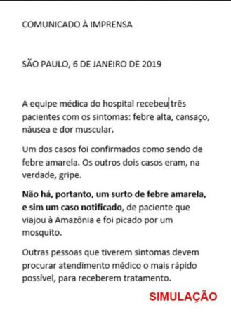

Agora ao invés de se contentar com as informações que recebemos por mensagem ou encontramos nas redes sociais, vamos fazer nossa própria pesquisa.
Quais fontes de informação são confiáveis?
Quais fontes de informação sobre saúde são confiáveis e devemos procurar para investigar mais sobre esse assunto?
Conseguimos um contato no hospital local e perguntamos sobre o surto de febre amarela. O Hospital emitiu o seguinte comunicado oficial.
